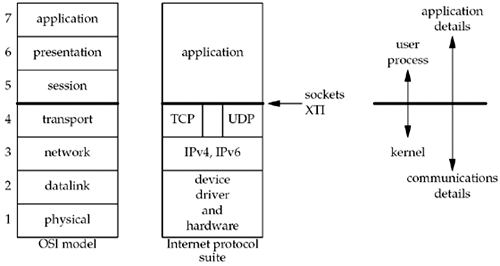

| [ Team LiB ] |
|
1.7 OSI ModelA common way to describe the layers in a network is to use the International Organization for Standardization (ISO) open systems interconnection (OSI) model for computer communications. This is a seven-layer model, which we show in Figure 1.14, along with the approximate mapping to the Internet protocol suite. Figure 1.14. Layers in OSI model and Internet protocol suite. We consider the bottom two layers of the OSI model as the device driver and networking hardware that are supplied with the system. Normally, we need not concern ourselves with these layers other than being aware of some properties of the datalink, such as the 1500-byte Ethernet maximum transfer unit (MTU), which we describe in Section 2.11. The network layer is handled by the IPv4 and IPv6 protocols, both of which we will describe in Appendix A. The transport layers that we can choose from are TCP and UDP, and we will describe these in Chapter 2. We show a gap between TCP and UDP in Figure 1.14 to indicate that it is possible for an application to bypass the transport layer and use IPv4 or IPv6 directly. This is called a raw socket, and we will talk about this in Chapter 28. The upper three layers of the OSI model are combined into a single layer called the application. This is the Web client (browser), Telnet client, Web server, FTP server, or whatever application we are using. With the Internet protocols, there is rarely any distinction between the upper three layers of the OSI model. The sockets programming interfaces described in this book are interfaces from the upper three layers (the "application") into the transport layer. This is the focus of this book: how to write applications using sockets that use either TCP or UDP. We already mentioned raw sockets, and in Chapter 29 we will see that we can even bypass the IP layer completely to read and write our own datalink-layer frames. Why do sockets provide the interface from the upper three layers of the OSI model into the transport layer? There are two reasons for this design, which we note on the right side of Figure 1.14. First, the upper three layers handle all the details of the application (FTP, Telnet, or HTTP, for example) and know little about the communication details. The lower four layers know little about the application, but handle all the communication details: sending data, waiting for acknowledgments, sequencing data that arrives out of order, calculating and verifying checksums, and so on. The second reason is that the upper three layers often form what is called a user process while the lower four layers are normally provided as part of the operating system (OS) kernel. Unix provides this separation between the user process and the kernel, as do many other contemporary operating systems. Therefore, the interface between layers 4 and 5 is the natural place to build the API. |
| [ Team LiB ] |
|